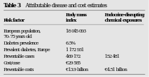

<?xml version="1.0" encoding="UTF-8"?>
<table title="table3" id="table3" class="tabcontent" xmlns="http://www.w3.org/1999/xhtml">
 <tr>
  <td>
   
   <p>corpus-oa-validation/10.1136_jech-2016-208006/tables/table3/table.svg.png</p>
  </td>
  <td>
   <table class="table">
    <caption/>
    <tr>
     <th class="cell">European population, 70–75 years old Diabetes prevalence Prevalent diabetes, Europe Preventable cases Cost/case Preventable costs </th>
     <th class="cell">18 045 093 6.5% 1 172 931 469 172 €29 585 €13.9 billion </th>
     <th class="cell">152 481 €4.51 billion </th>
    </tr>
   </table>
   <p>corpus-oa-validation/10.1136_jech-2016-208006/tables/table3/table.svg.html</p>
  </td>
 </tr>
</table>
